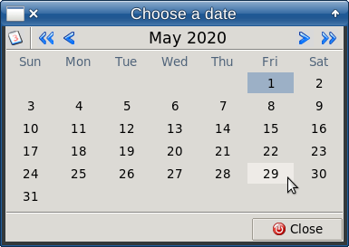

The klnd package provides a calendar widget to use along with apave package.
Features:
-value or -tvar (variable name) optionThe calendar looks like this:

To directly call the calendar, use the following commands:
package require klnd klnd::calendar ?-option value ... ? # or this way source [file join $::apave::apaveDir pickers klnd klnd.tcl] klnd::calendar ?-option value ... ?
where option may be:
-value | sets an input date (omittable) |
-tvar | sets a variable name to hold the input/output value (omittable) |
-dateformat | sets the input/output date format (%D by default) |
-weekday | sets a first week day: %w for Sunday, %u for Monday (default) |
-modal | yes if the calendar should be a modal window (default) |
-title | sets the calendar's title |
-geometry | sets the calendar's geometry |
-entry | sets a widget's path to show the calendar under |
-parent | sets a parent toplevel window to center the calendar in |
-centerme | yes if the calendar should be centered in the screen |
If -value and -tvar options are both set, the -tvar is preferred. If both omitted, a current system date is used as input.
The calendar returns a chosen date (setting also the -tvar variable if any) or "" at no choice.
The priority of geometry options: -geometry, -entry, -parent, -centerme. At no geometry option given, the calendar is shown under the mouse pointer.
The -parent option may be used along with -geometry, -entry, as it allows a child window to inherit the parent's attributes.
The calendar provides the hotkeys Left, Right, Up, Down, PageUp, PageDown, Home, End and F3 to navigate through days, months and years.
The Enter / Space keys or Double-Click are used to pick a date.
With apave package, the calendar can be used in two forms: date picker and embedded calendar:
An example of using date picker for apave layout:
{dat1 labDat1 L 1 1 {} {-tvar ::N::dat1 -title {Date of the event} -dateformat %d.%m.%Y -weekday %w}}
This example includes -tvar option meaning a variable name to hold the date.
The embedded calendar differs from this with daT type of widget used instead of dat. Also, this form of calendar doesn't allow using the keyboard; only the mouse is used in it.
The below example is taken from alited's source:
{.daT - - - - {pack -fill both} {-tvar alited::project::klnddata(date) -com {alited::project::KlndUpdate} -dateformat $alited::project::klnddata(dateformat) -tip {alited::project::KlndTip %W %D}}}
This example includes -com option to run a command at clicking a day. This command can use ::klnd::update to highlight some days in the calendar. In alited these days contain reminders of TODOs being dead-lines.
Options of embedded calendar:
-com, -command | a command to run at left-click |
-popup | a command to run at right-click |
-currentmonth | a current month to display, in form of "year/month" |
-united | if yes, means "united" calendars |
-daylist | a list of selected days for "united" calendars |
-hllist | a list of highlighted days |
-tip | a command to get a day's tip |
A command of -com, -command, -popup options can use wildcards: %y, %m, %d for year, month, day, %X, %Y for mouse pointer's coordinates.
A command of -tip option can use wildcards: %W for a day widget's path, %D for a day.
UI procedures of embedded calendar:
::klnd::labelPath | gets a title label's path, to change its attributes |
::klnd::selectedDay | gets a selected day |
::klnd::getDaylist | gets a list of selected days (for united calendars) |
::klnd::update | redraws a calendar for a month |
The procedures use obj argument, which is just an index of a calendar (beginning with 1). If omitted or equal to {}, obj means a last created calendar.
The multiple embedded calendars may be united with -united yes option, so that a user can select a list of days inside them.
Makes a calendar label blink.
| if yes, starts blinking, else stops it |
proc ::klnd::blinking {doit} { # Makes a calendar label blink. # doit - if yes, starts blinking, else stops it lassign [::apave::obj csGet] - fgnorm - bgnorm lassign [::apave::obj csGet 45] - - - - - bgblink fgblink set lab [::klnd::labelPath] if {$doit} { after idle "::apave::blinkWidget $lab $fgnorm $bgnorm $fgblink $bgblink 100 4" } else { ::apave::blinkWidget $lab $fgnorm $bgnorm } }
The main procedure of the calendar's toplevel.
| options of the calendar |
proc ::klnd::calendar {args} { # The main procedure of the calendar's toplevel. # args - options of the calendar variable my::p set my::p(isWidget) no # get options and initialize the calendar's settings lassign [my::InitCalendar {*}$args] title datevalue tvar parent centerme geo entry set args [clearArgs {*}$args] # priority of geometry options: -geometry, -entry, -parent, -centerme # if no geometry option, show the calendar under the mouse pointer if {$geo ne {}} { set geo "-geometry $geo" } elseif {$entry ne {}} { set x [winfo rootx $entry] set y [expr {[winfo rooty $entry]+32}] set geo "-geometry +$x+$y" } elseif {$parent ne {}} { set geo "-centerme $parent" ;# to center in a toplevel window } elseif {$centerme ne {}} { set geo "-centerme $centerme" ;# it's an option of apave's } else { set geo "-geometry +[expr {[winfo pointerx .]+10}]+[expr {[winfo pointery .]+10}]" } set parent [string trimright $parent .] set win [set my::p(win) "$parent._apave_CALENDAR_"] catch {$my::p(obj) destroy} # create apave object and layout its window set my::p(obj) [::apave::APaveInput create APAVE_CLND $win] $my::p(obj) makeWindow $win.fra $title $my::p(obj) paveWindow $win.fra [list {*}[my::MainWidgets] {seh fra T 1 7 {-pady 4}} {fraBottom seh T 1 7 {-st ew}} {fraBottom.h_ - - - - {pack -fill both -expand 1 -side left} {}} {fraBottom.But_KLNDCLOSE - - - - {pack -side left} {-t "Close" -com "$::klnd::my::p(obj) res $win 0"}} ] # binds for day buttons and 'Close' foreach {ev prc} { <Home> "::klnd::my::GoYear -1 yes" <End> "::klnd::my::GoYear 1 yes" <Prior> "::klnd::my::GoMonth -1 yes" <Next> "::klnd::my::GoMonth 1 yes"} { for {set i 1} {$i<38} {incr i} { set but [$my::p(obj) BuT_KLNDSTD$i] bind $but $ev $prc bind $but <FocusIn> "::klnd::my::Enter $i" bind $but <KeyPress> "::klnd::my::KeyPress $i %K" bind $but <Double-1> "::klnd::my::DoubleClick $win $i" } catch {bind [$my::p(obj) But_KLNDCLOSE] $ev $prc} } bind $win <F3> ::klnd::my::SetCurrentDay bind $win <KeyPress> "::klnd::my::Leave" # show and work with the calendar after idle "::klnd::my::ShowMonth $my::p(m) $my::p(y)" set res [$my::p(obj) showModal $win -resizable {0 0} {*}$args {*}$geo] # get the result of the selection if any if {$res && $my::p(dvis)} { set res [clock format [clock scan $my::p(mvis)/$my::p(dvis)/$my::p(yvis) -format %D] -format $my::p(dformat)] if {$tvar ne {}} {set $tvar $res} } else { set res {} } $my::p(obj) destroy destroy $win return $res }
The main procedure of the calendar embedded widget.
| apave object |
| container widget for ownname |
| frame widget for calendar |
| options of the calendar |
Returns a list of widgets for apave layout.
proc ::klnd::calendar2 {pobj w ownname args} { # The main procedure of the calendar embedded widget. # pobj - apave object # w - container widget for *ownname* # ownname - frame widget for calendar # args - options of the calendar # Returns a list of widgets for apave layout. variable my::p set obj [incr my::p(objNUM)] set my::p($obj) $pobj my::InitSettings my::InitCalendar {*}$args if {$my::p(currentmonth) eq {}} { lassign [::klnd::currentYearMonthDay] year month day set my::p(currentmonth) "$year/$month" set my::p(currentdate) "$year/$month/$day" } # save options for current calendar foreach opt {weekday months days loc yvis mvis dvis com tvar dformat united currentmonth daylist popup hllist tip} { set my::p($opt$obj) $my::p($opt) } if {$my::p(daylist) ne {-} && $my::p(united)} { # for calendars united, initialize day lists per month set my::p(daylist$obj) [list] foreach date $my::p(daylist) { set d [clock format [clock scan $date -format $my::p(dformat)] -format %Y/%N/%d] lassign [split $d /] y m set m [string trim $m] lappend my::p(daylist$obj) $date } } # if calendars are united, it's selected at start # and saved as previously selected one set my::p(olddate$obj) {} # binds for day buttons and show and work with the calendar after idle "::klnd::my::BindButtons2 $obj; ::klnd::my::ShowMonth2 $obj $my::p(m) $my::p(y) yes yes" set res [my::MainWidgets2 $obj $ownname] return $res }
Removes specific options from args.
| list of options |
proc ::klnd::clearArgs {args} { # Removes specific options from args. # args - list of options return [::apave::removeOptions $args -title -value -tvar -locale -parent -dateformat -weekday -com -command -currentmonth -united -daylist -hllist -popup -tip] }
Gets current year, month, day. Return a list of current year, month, day.
proc ::klnd::currentYearMonthDay {} { # Gets current year, month, day. # Return a list of current year, month, day. set ym [clock seconds] return [list {*}" [clock format $ym -format %Y] [clock format $ym -format %N] [clock format $ym -format %e]"] ] }
Gets a day list which was set initially and possibly changed by a user.
| apave object |
| minimal index of calendar widget; optional, default 0 |
| maximal index of calendar widget; optional, default 9999999 |
The pobj is the same as passed to klnd::calendar2.
proc ::klnd::getDaylist {pobj {min 0} {max 9999999}} { # Gets a day list which was set initially and possibly changed by a user. # pobj - apave object # min - minimal index of calendar widget # max - maximal index of calendar widget # The pobj is the same as passed to klnd::calendar2. # See also: calendar2 variable my::p set res [list] if {![catch {set objNUM $my::p(objNUM)}]} { for {set obj 0} {$obj<$objNUM} {} { incr obj if {$my::p($obj) eq $pobj && [info exist my::p(daylist$obj)]} { if {$my::p(daylist$obj) ne {-} && $min<=$obj && $obj<=$max} { foreach d $my::p(daylist$obj) { if {[lsearch -exact $res $d]<0} { lappend res $d } } } } } } return $res }
Gets a title label path.
| index of the calendar; optional, default "" |
Useful to change the label's attributes. If obj omitted, returns a path of last created label.
proc ::klnd::labelPath {{obj {}}} { # Gets a title label path. # obj - index of the calendar # Useful to change the label's attributes. # If *obj* omitted, returns a path of last created label. variable my::p if {$obj eq {}} {set obj $my::p(objNUM)} return [$my::p($obj) LabMonth$obj] }
Gets maximal year that is correct.
proc ::klnd::maxYear {} { # Gets maximal year that is correct. return 9999 }
Gets minimal year that is correct.
proc ::klnd::minYear {} { # Gets minimal year that is correct. return 1753 }
Gets a list of months according to a locale.
| the locale; optional, default "" |
proc ::klnd::months {{loc {}}} { # Gets a list of months according to a locale. # loc - the locale if {$loc eq {}} {set loc [my::DefaultLocale]} set months [list] foreach i {01 02 03 04 05 06 07 08 09 10 11 12} { lappend months [clock format [clock scan "$i/01/2021" -format %D -locale $loc] -format %B -locale $loc] } return $months }
Gets a selected day.
| index of the calendar; optional, default "" |
| year; optional, default "" |
| month; optional, default "" |
| day; optional, default "" |
If y/m/d are set, they define currently selected date.
Returns a list of year, month, day
proc ::klnd::selectedDay {{obj {}} {y {}} {m {}} {d {}}} { # Gets a selected day. # obj - index of the calendar # y - year # m - month # d - day # If y/m/d are set, they define currently selected date. # Returns a list of year, month, day variable my::p if {$obj eq {}} {set obj $my::p(objNUM)} if {$y ne {}} { set my::p(yvis$obj) $y set my::p(mvis$obj) $m set my::p(dvis$obj) $d if {$my::p(tvar$obj) ne {}} { set p(olddate$obj) [my::FormatDay2 $obj $y $m $d] set $my::p(tvar$obj) $p(olddate$obj) } set my::p(currentmonth$obj) "$y/$m" after idle "::klnd::my::ShowMonth2 $obj $m $y yes yes; ::klnd::blinking yes" } return [list $my::p(yvis$obj) $my::p(mvis$obj) $my::p(dvis$obj)] }
Redraws a calendar.
| index of the calendar; optional, default "" |
| year to redraw; optional, default "" |
| month to redraw; optional, default "" |
| Not documented; optional, default "" |
proc ::klnd::update {{obj {}} {year {}} {month {}} {hllist {}}} { # Redraws a calendar. # obj - index of the calendar # year - year to redraw # month - month to redraw variable my::p if {$obj eq {}} { set obj $my::p(objNUM) set year $my::p(yvis$obj) set month $my::p(mvis$obj) set my::p(hllist$obj) $hllist } my::ShowMonth2 $obj $month $year yes yes }
Gets a list of week days according to a locale.
| the locale; optional, default "" |
Return list of weekdays and week format (%u or %w)
proc ::klnd::weekdays {{loc {}}} { # Gets a list of week days according to a locale. # loc - the locale # Return list of weekdays and week format (%u or %w) variable my::locales if {$loc eq {}} {set loc [my::DefaultLocale]} if {[array names my::locales $loc] ne {}} { set wformat $my::locales($loc) } else { set wformat %u ;# by default, 1st day of week is Monday } if {$wformat eq {%u}} { ;# Sunday be the last day of week set wdays {1 2 3 4 5 6 7} } else { set wdays {0 1 2 3 4 5 6} } set days [list] foreach i $wdays { lappend days [clock format [clock scan "03/[expr {14+$i}]/2021" -format %D -locale $loc] -format %a -locale $loc] } return [list $days $wformat] }
The ::klnd::my namespace contains procedures for the "internal" usage by klnd package.
All of them are upper-cased, in contrast with the UI procedures of klnd namespace.
Binds events to buttons of a calendar.
| index of calendar |
proc ::klnd::my::BindButtons2 {obj} { # Binds events to buttons of a calendar. # obj - index of calendar variable p for {set i 1} {$i<38} {incr i} { set but [$::klnd::my::p($obj) BuT$obj-${i}KLND] bind $but <Button-1> "::klnd::my::Enter2 $obj $i 1" } }
Gets a button's tip.
| index of calendar |
| a caller's command returning a tip |
| current day button's path |
The tipcom command can include wildcards:
%W | a current day button's path |
%D | a current day's value as Y/M/D |
proc ::klnd::my::ButtonTip {obj tipcom w} { # Gets a button's tip. # obj - index of calendar # tipcom - a caller's command returning a tip # w - current day button's path # The tipcom command can include wildcards: # %W - a current day button's path # %D - a current day's value as Y/M/D variable p set res {} catch { set y $p(yvis$obj) set m $p(mvis$obj) set d [string trim [$w cget -text]] set d [::klnd::my::FormatDay2 $obj $y $m $d] set tipcom [string map [list %W $w %D $d] $tipcom] set res [eval {*}$tipcom] } return $res }
Gets the current date.
proc ::klnd::my::CurrentDate {} { # Gets the current date. variable p set sec [clock seconds] lassign [split [clock format $sec -format $p(FINT)] /] p(y) p(m) p(d) return $sec }
Gets a default locale currently used in a system.
proc ::klnd::my::DefaultLocale {} { # Gets a default locale currently used in a system. return [lindex [::msgcat::mcpreferences] 0] }
Processes double-clicking a button (to choose or ignore).
| window's path |
| button index |
proc ::klnd::my::DoubleClick {win i} { # Processes double-clicking a button (to choose or ignore). # win - window's path # i - button index variable p if {[IsDay $i]} {$p(obj) res $win 1} }
Highlights a button and makes it current.
| button index |
| yes, if the button is clicked and focused; optional, default 0 |
proc ::klnd::my::Enter {i {focusin 0}} { # Highlights a button and makes it current. # i - button index # focusin - yes, if the button is clicked and focused variable p if {![IsDay $i]} return Leave [set w [$p(obj) BuT_KLNDSTD$i]] configure -fg $p(fgsel) -bg $p(bgsel) set p(ienter) $i set p(dvis) [$w cget -text] catch {after cancel $p(after2)} set p(after2) [after 10 "if \[winfo exists $w\] {focus -force $w}"] if {$focusin && $p(com) ne {}} {eval $p(com)} }
Highlights a button and makes it current.
| index of calendar |
| button index |
| yes, if the button is clicked and focused; optional, default 0 |
proc ::klnd::my::Enter2 {obj i {focusin 0}} { # Highlights a button and makes it current. # obj - index of calendar # i - button index # focusin - yes, if the button is clicked and focused variable p if {[catch {set isday [IsDay2 $obj $i]}]} {set isday no} if {!$isday} return set w [$p($obj) BuT$obj-${i}KLND] set p(dvis$obj) [$w cget -text] set date [FormatDay2 $obj $p(yvis$obj) $p(mvis$obj) $p(dvis$obj)] if {$focusin} { if {$p(daylist$obj) ne {-}} { # add/delete the date to/from the list of selected days if {[set di [lsearch -exact $p(daylist$obj) $date]]>-1} { set p(daylist$obj) [lreplace $p(daylist$obj) $di $di] ShowMonth2 $obj $p(mvis$obj) $p(yvis$obj) no return } else { lappend p(daylist$obj) $date } } } ShowMonth2 $obj $p(mvis$obj) $p(yvis$obj) no if {$focusin} { set p(olddate$obj) $date if {$p(united$obj)} { # if calendars are linked with united, unselect previously selected COMMON day # and then highlight the current date catch { if {$p(daylist$obj) eq {-}} { $p(wunited) configure -fg $p(fg1) -bg $p(bg1) } if {[$p(wcurr$obj) cget -bg] ne $p(bgsel)} { set fg [fgMayHL $obj $p(fg2) $p(yvis$obj) $p(mvis$obj) $p(dvis$obj)] $p(wcurr$obj) configure -fg $fg -bg $p(bg2) } } } } set p(ienter) $i if {$p(tvar$obj) ne {}} { set $p(tvar$obj) $date if {$p(olddate$obj) eq $date} { if {$p(daylist$obj) ne {-}} { ShowMonth2 $obj $p(mvis$obj) $p(yvis$obj) no } else { catch { # unselect previously selected day of THIS month if {![HighlightCurrentDay2 $obj]} { $p(wunited$obj) configure -fg $p(fg1) -bg $p(bg1) } } # show selected day set fg [fgMayHL $obj $p(fgsel) $p(yvis$obj) $p(mvis$obj) $p(dvis$obj)] $w configure -fg $fg -bg $p(bgsel) } # save the selected widget for THIS month # and as COMMON for calendars linked with united set p(wunited$obj) $w if {$p(united$obj)} {set p(wunited) $w} } } if {$focusin && $p(com$obj) ne {}} { eval [MapYMD $p(com$obj) $p(yvis$obj) $p(mvis$obj) $p(dvis$obj)] } HighlightCurrentDay2 $obj }
Gets a foreground color (possibly highlighting).
| Not documented. |
| default foreground color |
| year |
| month |
| day |
proc ::klnd::my::fgMayHL {obj fg y m d} { # Gets a foreground color (possibly highlighting). # fg - default foreground color # y - year # m - month # d - day variable p foreach item $p(hllist$obj) { # date format for highlighting is %Y/%m/%d lassign [split [lindex $item 0] /] yh mh dh set dh [string trimleft $dh { 0}] set mh [string trimleft $mh { 0}] if {$y==$yh && $m==$mh && $d==$dh} { set fg red break } } return $fg }
Gets a date formatted according to a current format.
| index of calendar |
| year of the date |
| month of the date |
| day of the date |
proc ::klnd::my::FormatDay2 {obj y m d} { # Gets a date formatted according to a current format. # obj - index of calendar # y - year of the date # m - month of the date # d - day of the date variable p return [clock format [clock scan $m/$d/$y -format %D] -format $p(dformat$obj) -locale $p(loc$obj)] }
Shifts the month backward/forward.
| increment for the current month |
| yes when called from 'bind'; optional, default no |
proc ::klnd::my::GoMonth {i {dobreak no}} { # Shifts the month backward/forward. # i - increment for the current month # dobreak - yes when called from 'bind' variable p set m [expr {$p(mvis)+($i)}] if {$m>12} {set m 1; incr p(yvis)} if {$m<1} {set m 12; incr p(yvis) -1} ShowMonth $m $p(yvis) if {$dobreak} {return -code break} }
Shifts the month backward/forward.
| index of calendar |
| increment for the current month |
| yes when called from 'bind'; optional, default no |
proc ::klnd::my::GoMonth2 {obj i {dobreak no}} { # Shifts the month backward/forward. # obj - index of calendar # i - increment for the current month # dobreak - yes when called from 'bind' variable p set m [expr {$p(mvis$obj)+($i)}] if {$m>12} {set m 1; incr p(yvis$obj)} if {$m<1} {set m 12; incr p(yvis$obj) -1} ShowMonth2 $obj $m $p(yvis$obj) if {$dobreak} {return -code break} }
Shifts the year backward/forward.
| increment for the current year |
| yes when called from 'bind'; optional, default no |
proc ::klnd::my::GoYear {i {dobreak no}} { # Shifts the year backward/forward. # i - increment for the current year # dobreak - yes when called from 'bind' variable p ShowMonth $p(mvis) [expr {$p(yvis)+($i)}] if {$dobreak} {return -code break} }
Shifts the year backward/forward.
| index of calendar |
| increment for the current year |
| yes when called from 'bind'; optional, default no |
proc ::klnd::my::GoYear2 {obj i {dobreak no}} { # Shifts the year backward/forward. # obj - index of calendar # i - increment for the current year # dobreak - yes when called from 'bind' variable p ShowMonth2 $obj $p(mvis$obj) [expr {$p(yvis$obj)+($i)}] if {$dobreak} {return -code break} }
Highlights the current day's button.
proc ::klnd::my::HighlightCurrentDay {} { # Highlights the current day's button. variable p catch {[$p(obj) BuT_KLNDSTD$p(icurr)] configure -fg $p(fg2) -bg $p(bg2)} }
Highlights the current day's button.
| index of calendar |
proc ::klnd::my::HighlightCurrentDay2 {obj} { # Highlights the current day's button. # obj - index of calendar variable p if {$p(currentmonth$obj) eq "$p(yvis$obj)/$p(mvis$obj)"} { if {![info exists p(wcurr$obj)]} { catch {set p(wcurr$obj) [$p($obj) BuT$obj-$p(icurr$obj)KLND]} } catch { if {[$p(wcurr$obj) cget -bg] ne $p(bgsel)} { set day [$p(wcurr$obj) cget -text] set fg [fgMayHL $obj $p(fg2) $p(yvis$obj) $p(mvis$obj) $day] $p(wcurr$obj) configure -fg $fg -bg $p(bg2) } if {$p(united$obj)} { # if calendars are linked with united, one COMMON day selected for all set p(wcurrdate) $p(wcurr$obj) } } return [expr {[info exists p(wunited$obj)] && [info exists p(wcurr$obj)] && $p(wunited$obj) eq $p(wcurr$obj)}] } return no }
Initializes the settings of the calendar.
| Optional arguments. |
proc ::klnd::my::InitCalendar {args} { # Initializes the settings of the calendar. variable p variable locales InitSettings lassign [::apave::parseOptions $args -title {} -value {} -tvar {} -locale {} -parent {} -dateformat %D -weekday {} -centerme {} -geometry {} -entry {} -com {} -command {} -currentmonth {} -united no -daylist {-} -hllist {} -popup {} -tip {}] title datevalue tvar loc parent p(dformat) p(weekday) centerme geo entry com1 com2 p(currentmonth) p(united) p(daylist) p(hllist) p(popup) p(tip) if {$com2 eq {}} {set p(com) $com1} {set p(com) $com2} # get localized week day names lassign [::klnd::weekdays $loc] p(days) p(weekday) # get localized month names set p(months) [::klnd::months $loc] set p(loc) $loc set p(tvar) $tvar if {$tvar ne {}} { set datevalue [set $tvar] } elseif {$p(daylist) ne {-}} { set datevalue [lindex $p(daylist) 0] } catch {unset p(after)} ;# to pause more at start # colors to be used CurrentDate set p(yvis) $p(y) ;# by default, the selected date = the current date set p(mvis) $p(m) set p(dvis) $p(d) if {$title eq {}} {set title [::msgcat::mc Calendar]} catch {set p(dformat) [subst $p(dformat)]} # get the day to display at start if {![catch {set ym [clock scan $datevalue -format $p(dformat)]}]} { set p(m) [clock format $ym -format %N] set p(y) [clock format $ym -format %Y] set p(dvis) [clock format $ym -format %e] } ::apave::obj untouchWidgets *KLND* return [list $title $datevalue $tvar $parent $centerme $geo $entry] }
Gets initial settings, once only.
proc ::klnd::my::InitSettings {} { # Gets initial settings, once only. variable p variable msgdir if {![info exists :klnd::my::prevY]} { foreach {i icon} {0 date 1 previous2 2 previous 3 next 4 next2} { image create photo IM_KLND_$i -data [::apave::iconData $icon small] } lassign [::apave::obj csGet] p(fg0) p(fg1) p(bg0) p(bg1) - p(bgsel) p(fgsel) - - p(fgh) - - - - p(fg2) p(bg2) # localized stuff catch {::msgcat::mcload $msgdir} set ::klnd::my::prevY [::msgcat::mc {Previous year}] set ::klnd::my::prevM [::msgcat::mc {Previous month}] set ::klnd::my::nextY [::msgcat::mc {Next year}] set ::klnd::my::nextM [::msgcat::mc {Next month}] } }
Check if a button shows a day.
| button index |
proc ::klnd::my::IsDay {i} { # Check if a button shows a day. # i - button index variable p return [expr {![catch {set w [$p(obj) BuT_KLNDSTD$i]}] && [$w cget -takefocus]}] }
Check if a button shows a day.
| index of calendar |
| button index |
proc ::klnd::my::IsDay2 {obj i} { # Check if a button shows a day. # obj - index of calendar # i - button index variable p return [expr {![catch {set w [$p($obj) BuT$obj-${i}KLND]}] && [string length [string trim [$w cget -text]]]}] }
Processes the key presses on buttons.
| button index |
| pressed key |
proc ::klnd::my::KeyPress {i K} { # Processes the key presses on buttons. # i - button index # K - pressed key variable p Leave $i switch -glob $K { Left {set n [expr {$i-1}]} Right {set n [expr {$i+1}]} Up {set n [expr {$i-7}]} Down {set n [expr {$i+7}]} Enter - Return - space {$p(obj) res $p(win) 1; return -code break} *Tab* {Leave; focus [$p(obj) But_KLNDCLOSE]; return -code break} default {Enter $i; return} } if {[IsDay $n]} { Enter $n } elseif {$K in {Left Up}} { GoMonth -1 } else { GoMonth 1 } }
Unhighlights a button.
| button index; optional, default 0 |
proc ::klnd::my::Leave {{i 0}} { # Unhighlights a button. # i - button index variable p if {$i && ![[$p(obj) BuT_KLNDSTD$i] cget -takefocus]} return foreach n [list $i $p(ienter)] { if {$n} {[$p(obj) BuT_KLNDSTD$n] configure -fg $p(fg1) -bg $p(bg1)} } HighlightCurrentDay }
Forms main widgets of calendar.
proc ::klnd::my::MainWidgets {} { # Forms main widgets of calendar. variable p if {$p(tip) eq {}} { set ::klnd::TMPTIP {} } else { set tip [string map [list \{ ( \} )] $p(tip)] ;# for a possible bad list set ::klnd::TMPTIP "-tip {$tip}" } return { {fra - - 1 7 {-st new} {}} {.fraTool - - 1 7 {-st new} {}} {.fraTool.tool - - - - {pack -side top} {-array { IM_KLND_0 {::klnd::my::SetCurrentDay} sev 6 IM_KLND_1 {{::klnd::my::GoYear -1} -tip "$::klnd::my::prevY\n(Home)@@-under 5"} h_ 2 IM_KLND_2 {{::klnd::my::GoMonth -1} -tip "$::klnd::my::prevM\n(PageUp)@@-under 5"} h_ 3 LabMonth {"" {-fill x -expand 1} {-anchor center -w 14}} h_ 2 IM_KLND_3 {{::klnd::my::GoMonth 1} -tip "$::klnd::my::nextM\n(PageDown)@@-under 5"} h_ 3 IM_KLND_4 {{::klnd::my::GoYear 1} -tip "$::klnd::my::nextY\n(End)@@-under 5"} h_ 2 }}} {.fraDays .fraTool T - - {-st nsew}} {.fraDays.tcl { # make headers and buttons of days if {$::tcl_platform(platform) eq "windows"} { set att "-highlightthickness 1 -w 6" } else { set att "-highlightthickness 0 -w 3" } set wt - for {set i 1} {$i<50} {incr i} { if {$i<8} {set cur ".fraDays.LabDay$i"} {set cur ".fraDays.BuT_KLNDSTD[expr {$i-7}]"} if {($i%7)!=1} {set p L; set pw $pr} {set p T; set pw $wt; set wt $cur} if {$i<8} { set lwid "$cur $pw $p 1 1 {-st ew} {-anchor center -foreground $::klnd::my::p(fgh)}" } else { set lwid "$cur $pw $p 1 1 {-st ew} {-relief flat -overrelief flat -bd 0 -takefocus 0 -padx 8 -pady 4 -font {$::apave::FONTMAIN} -com {::klnd::my::Enter [expr {$i-7}] 1} $::klnd::TMPTIP $att}" } %C $lwid set pr $cur } }} } }
Forms main widgets of calendar.
| index of calendar |
| frame for calendar |
proc ::klnd::my::MainWidgets2 {obj ownname} { # Forms main widgets of calendar. # obj - index of calendar # ownname - frame for calendar variable p set ::klnd::TMPTIP {} catch { if {$p(tip$obj) ne {}} { set tipcom [list $p(tip)] ;# possible bad list set ::klnd::TMPTIP "-tip { -BALTIP %W -COMMAND {::klnd::my::ButtonTip $obj {$tipcom} %w} }" } } set p(tipF3$obj) "[::msgcat::mc {Current date}]: [clock format [CurrentDate] -format $p(dformat$obj) -locale $p(loc$obj)]" set res [list "$ownname.fra - - 1 10 {-st new} {}"] # if calendars are united, no display of tool bar if {$p(united$obj)} { lappend res "$ownname.fra.LabMonth$obj - - - - {pack -fill x -expand 1} {-anchor center -w 14}" } else { lappend res "$ownname.fra.tool - - - - {pack -side top} {-array { IM_KLND_0 {{::klnd::my::SetCurrentDay2 $obj} -tip {$::klnd::my::p(tipF3$obj)@@-under 5}} sev 6 IM_KLND_1 {{::klnd::my::GoYear2 $obj -1} -tip {$::klnd::my::prevY\n(Home)@@-under 5}} h_ 2 IM_KLND_2 {{::klnd::my::GoMonth2 $obj -1} -tip {$::klnd::my::prevM\n(PageUp)@@-under 5}} h_ 3 LabMonth$obj {{} {-fill x -expand 1} {-anchor center -w 14}} h_ 2 IM_KLND_3 {{::klnd::my::GoMonth2 $obj 1} -tip {$::klnd::my::nextM\n(PageDown)@@-under 5}} h_ 3 IM_KLND_4 {{::klnd::my::GoYear2 $obj 1} -tip {$::klnd::my::nextY\n(End)@@-under 5}} h_ 2 }}" } lappend res "$ownname.fraDays $ownname.fra T - - {-st nsew}" lappend res [list $ownname.fraDays.tcl " if {{$::tcl_platform(platform)} eq {windows}} { set att {-highlightthickness 1 -w 6} } else { set att {-highlightthickness 0 -w 3} } ; set wt - ; for {set i 1} {\$i<50} {incr i} { if {\$i<8} {set cur $ownname.fraDays.LabDay$obj\$i} {set cur $ownname.fraDays.BuT$obj-\[expr {\$i-7}\]KLND} ; if {(\$i%7)!=1} {set p L; set pw \$pr} {set p T; set pw \$wt; set wt \$cur} ; if {\$i<8} { set lwid \"\$cur \$pw \$p 1 1 {-st ew} {-anchor center -foreground $::klnd::my::p(fgh)}\" } else { set lwid \"\$cur \$pw \$p 1 1 {-st ew} {-relief flat -overrelief flat -bd 0 -takefocus 0 -padx 8 -pady 4 -font {$::apave::FONTMAIN} -com {::klnd::my::Enter2 $obj \[expr {\$i-7}\]} $::klnd::TMPTIP \$att}\" } ; %C \$lwid ; set pr \$cur }" ] return $res }
Gets a script with %y, %m, %d wildcards.
| Not documented. |
| Not documented. |
| Not documented. |
| Not documented. |
proc ::klnd::my::MapYMD {script y m d} { # Gets a script with %y, %m, %d wildcards. return [string map [list %y $y %m $m %d $d] $script] }
Goes to the current date.
proc ::klnd::my::SetCurrentDay {} { # Goes to the current date. variable p set p(dvis) 0 ShowMonth $p(m) $p(y) Enter $p(icurr) }
Goes to the current date.
| index of calendar |
proc ::klnd::my::SetCurrentDay2 {obj} { # Goes to the current date. # obj - index of calendar variable p set p(dvis$obj) 0 ShowMonth2 $obj $p(m) $p(y) Enter2 $obj $p(icurr$obj) 1 }
Displays a month's days.
| month y -year |
| Not documented. |
proc ::klnd::my::ShowMonth {m y} { # Displays a month's days. # m - month # y -year variable p set sec [CurrentDate] set y [expr {max($y,1753)}] ::baltip::tip [$p(obj) BuT_IM_KLND_0] "[::msgcat::mc {Current date}]: [clock format $sec -format $p(dformat)]\n(F3)" -under 5 # display month & year [$p(obj) LabMonth] configure -text "[lindex $p(months) [expr {$m-1}]] $y" -font [::apave::obj boldDefFont [expr {[::apave::obj basicFontSize]+2}]] # display day names for {set i 1} {$i<8} {incr i} { [$p(obj) LabDay$i] configure -text " [lindex $p(days) $i-1] " } # 1st day of the month's first week: set i0 [clock format [clock scan "$m/1/$y" -format %D] -format %w] if {$p(weekday) eq "%u"} {if {$i0} {incr i0 -1} {set i0 6}} # get the last day of month if {[set yl $y] && [set ml $m]==12} {set ml 1; incr yl} set lday [clock format [clock scan "[incr ml]/1/$yl 1 day ago"] -format %d] set iday [set p(icurr) 0] for {set i 1} {$i<43} {incr i} { if {$i<=$i0 || $iday>=$lday} { set att "-takefocus 0 -text { } -activebackground $p(bg1)" } else { set att "-takefocus 1 -text {[incr iday]} -activeforeground $p(fg0) -activebackground $p(bg0)" if {$iday==$p(dvis) || ($iday==$lday && $iday<$p(dvis))} { if {[info exists p(after)]} {set af 20} {set af 200} ;# less at key pressing tight catch {after cancel $p(after)} set p(after) [after $af "::klnd::my::Enter $i; ::klnd::my::HighlightCurrentDay"] } if {$iday==1} {set p(d1st) $i} if {$y==$p(y) && $m==$p(m) && $iday==$p(d)} { set p(icurr) $i ;# button's index of the current date } } [$p(obj) BuT_KLNDSTD$i] configure {*}$att -fg $p(fg1) -bg $p(bg1) -relief flat -overrelief flat } set p(mvis) $m ;# month & year currently visible set p(yvis) $y }
Displays a month's days.
| index of calendar |
| month |
| year |
| yes, if perform Enter2 proc; optional, default yes |
| yes, if bind a popup menu; optional, default no |
proc ::klnd::my::ShowMonth2 {obj m y {doenter yes} {dopopup no}} { # Displays a month's days. # obj - index of calendar # m - month # y - year # doenter - yes, if perform Enter2 proc # dopopup - yes, if bind a popup menu variable p set y [expr {max($y,[::klnd::minYear])}] # if calendars are linked with united, no display of year in a title if {$p(united$obj)} {set yd {}} {set yd " $y"} [$p($obj) LabMonth$obj] configure -text "[lindex $p(months$obj) [expr {$m-1}]]$yd" -font [::apave::obj boldDefFont [expr {[::apave::obj basicFontSize]+2}]] # highlight color set hlcolor red ;#[lindex [::apave::obj csGet] 17] # display day names for {set i 1} {$i<8} {incr i} { [$p($obj) LabDay$obj$i] configure -text " [lindex $p(days$obj) $i-1] " } # 1st day of the month's first week: set i0 [clock format [clock scan "$m/1/$y" -format %D] -format %w] if {$p(weekday$obj) eq {%u}} {if {$i0} {incr i0 -1} {set i0 6}} # get the last day of month if {[set yl $y] && [set ml $m]==12} {set ml 1; incr yl} set lday [clock format [clock scan "[incr ml]/1/$yl 1 day ago"] -format %d] set iday [set p(icurr$obj) 0] for {set i 1} {$i<43} {incr i} { set fg $p(fg1) set bg $p(bg1) set wbut [$p($obj) BuT$obj-${i}KLND] if {$i<=$i0 || $iday>=$lday} { set att "-takefocus 0 -text { } -activebackground $p(bg1)" set script {} } else { set att "-takefocus 0 -text {[incr iday]} -activeforeground $p(fg0) -activebackground $p(bg0)" if {$doenter && ($iday==$p(dvis$obj) || ($iday==$lday && $iday<$p(dvis$obj)))} { catch {after cancel $p(after$obj)} set p(after$obj) [after idle "::klnd::my::Enter2 $obj $i; ::klnd::my::HighlightCurrentDay2 $obj"] } if {$iday==1} {set p(d1st) $i} if {$y==$p(y) && $m==$p(m) && $iday==$p(d)} { set p(icurr$obj) $i ;# button's index of the current date } if {$p(daylist$obj) ne {-}} { set dt [FormatDay2 $obj $y $m $iday] if {[lsearch -exact $p(daylist$obj) $dt]>-1} { set fg $p(fgsel) set bg $p(bgsel) } elseif {$p(currentdate) eq "$y/$m/$iday"} { set fg $p(fg2) set bg $p(bg2) } } if {$dopopup} { set script [MapYMD $p(popup$obj) $y $m $iday] } } if {$dopopup && $p(popup$obj) ne {}} { bind $wbut <Button-3> $script } # as last refuge: highlighting fg by hllist set fg [fgMayHL $obj $fg $y $m $iday] $wbut configure {*}$att -relief flat -overrelief flat -fg $fg -bg $bg } set p(mvis$obj) $m ;# month & year currently visible set p(yvis$obj) $y }